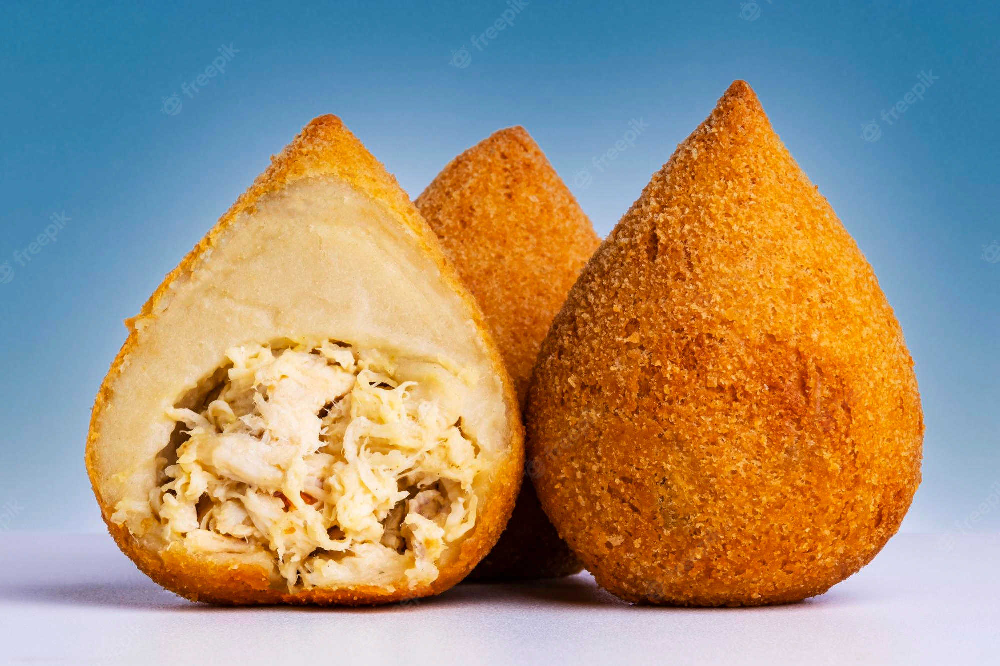

Coxinha Recipe

A Popular Snack in Brazil
A delicacy made up of Chicken and Bechamel sauce, breaded and shaped into tear-shape, and at last fried.
Ingredients
- 1 Chicken Breast
- 1/2 Cup of Chicken Broth
- 1/2 an Onion(white)
- 1 Tbsp of Chopped Parsely
- 1/2 Tbsp of Olive Oil
- 1 1/2 Cups of All-Purpose Flour
- 1 Tablespoon of Butter
- 1/2 Cup Bread Crumbs
- 1 Egg, Beaten
- Oil for Frying
- Salt and Pepper to Taste
Steps
- Combine chicken breasts and 1 cup chicken broth in a pot over medium heat. Bring to a boil, reduce heat, cover, and simmer until chicken is cooked through, 20 to 30 minutes. Keep checking that there is enough liquid in the pot and add more broth if necessary. Remove chicken from pot, allow to cool briefly, and shred with 2 forks.
- Heat olive oil in a skillet over medium heat and cook onion until soft and translucent, about 5 minutes. Add shredded chicken, olives, and parsley. Stir well and season with salt and pepper. Remove filling from heat and set aside.
- Heat 2 cups chicken broth and butter in a large saucepan over medium heat; season with salt and bring to a simmer. Add flour all at once and stir to form a thick paste. Stir vigorously until the mixture is smooth and no longer sticks to the bottom of the pan. Remove from heat and let pastry cool.
- Once pastry is cool enough to handle, transfer to an oiled work surface and knead until smooth, 2 to 3 minutes.
- Take a portion of pastry and roll into a golf ball-sized ball. Stick an oiled finger into the center of the ball and press the edges to create a small bowl. Stuff with 2 teaspoons of chicken filling and gather the top edges to seal, rolling into a teardrop shape. Set croquette aside and cover with a damp towel. Repeat with remaining pastry and filling.
- Set out 3 bowls in the following order: flour, beaten eggs, bread crumbs. Roll each croquette in flour, then dip in egg, then cover in breadcrumbs.
- Heat oil for deep frying in a large saucepan or deep fryer to 350 degrees F (175 degrees C). Fry the croquettes in batches, until golden brown on all sides, 7 to 10 minutes. Remove from oil and drain on paper towels.